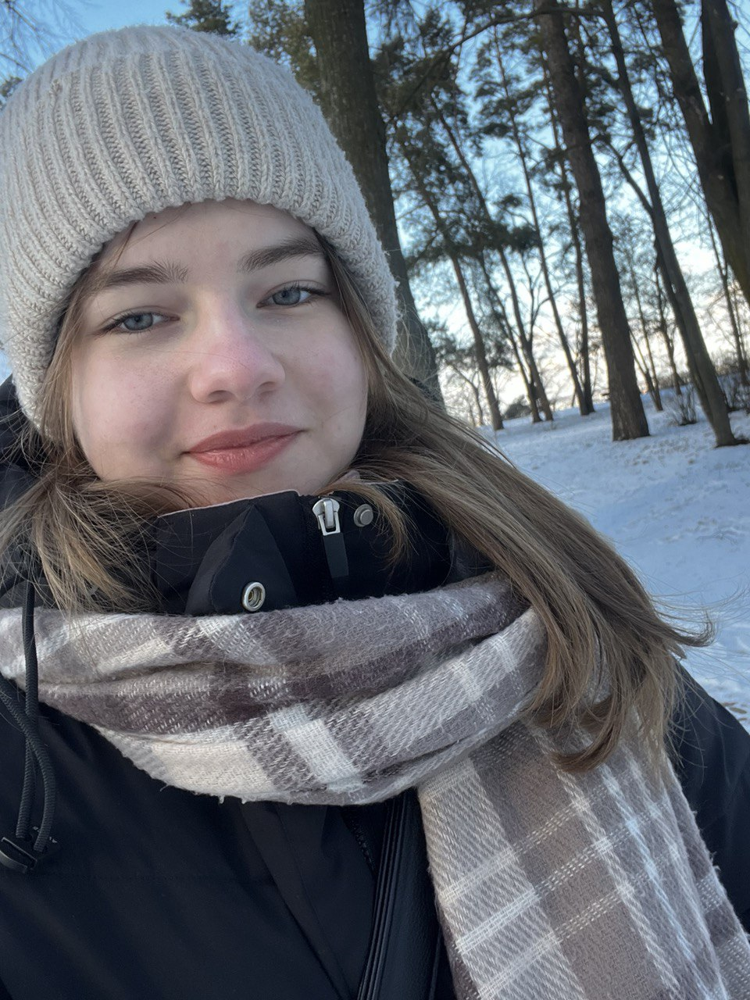

Привіт! Мене звати Дарія, і я студентка, який поєднує навчання, подорожі та саморозвиток.
У цьому блозі я ділюся корисними порадами, цікавими історіями та власним досвідом. Приєднуйтесь, буде цікаво!
Навігація
Навчання може бути викликом, але правильна організація часу та корисні ресурси допоможуть зробити його ефективнішим. Тут я ділюся лайфхаками, які допоможуть успішно проходити сесії, писати курсові роботи та знаходити корисні навчальні матеріали.
Підписуйся на мене в соцмережах, щоб бути в курсі нових публікацій та новин!